Our Services
FeesQuee Medical Tourism takes care of everything that you require during your medical visit to India for a simple and stress free stay. To make your journey as simple as possible, we will help take care of all the formalities required such that you can focus on your treatment while we do the rest.
Our experienced team will always work to make sure your journey to India is extremely comfortable and a lifetime time
soothing experience.
Airport pick-up/Drop-off facility
FeesQuee Medical tourism provides its patients and their attendant airport pick-up as they arrive India and drop-off as they
complete their treatment, facility absolutely free.
A cab will pick you up from the airport and drop you to hotel, hospital or guest house as per the plan.
Travel, accommodation and transport
FeesQuee Medical tourism also arranges accommodation for you close to the hospital you will be visiting. We have access to a range of different hotels, guest houses etc depending on your needs.
We can also provide you with an affordable transportation service required by you to and from various destinations inside the city during your visit.
Sightseeing and tourism
FeesQuee Medical tourism also offers you tourism and sightseeing tour packages to various destinations in India.
That can give you chance to explore the local culture, food, the way of life and provides you the opportunity to explore the beautiful country.
Contact Us..
Address :
FeesQuee Travel and Tourism
Road No-06, New Mig, Phase-2, Bhel,
Tellapur, Hyderabad, Telangana 502032
Tel : +91-8510858301
Email : info@FeesQueetravelandtourism.com
For Corporate queries
Nafees Kausar, Director
Tel : +91-8510858301
Email : naffykon@gmail.com
About us...
Introduction
FeesQuee Medical Tourism was founded in early 2017 and is one of the Leading Medical Value tourism companies in India. Our Aim of our company is to help people looking for Safe, High Quality & Economical Healthcare options in India. We are honoured and proud to stand by our aim of providing best healthcare at reasonable price. We at FeesQuee Medical Tourism appreciate the opportunity you give to us to help you achieve a better and healthier lifestyle.
At FeesQuee Medical Tourism we provide you a complete range of surgical and Non-Surgical options from a variety of corporate healthcare providers, wherein we believe in offering our patients the Highest Level of Care and Medical Expertise at an Affordable price point.
Our vision...
We know that when we provide service excellence for our patients, everything else takes care of itself. FeesQuee Medical Tourism operates in an environment where safety and quality are the first and foremost responsibility to our patients.
Our Values...
FeesQuee Medical Tourism strives to provide the highest standard of health care and excellent service to our patients. We continually look for new opportunities/ways to improve our care and service, and we always seek to understand and exceed expectations.
Whyus...
FeesQuee Medical Tourism offers you numerous reasons for choosing us.
- State-of-Art Medical Facilities.
- Reputed Health Care Professionals.
- No waiting time for availing the medical services.
- A variety of corporate hospitals to choose from all over India.
- Low Cost.
- Low Risk.
- Full Support Service - 24 X 7 services.
- Seeking excellence in healthcare.
- Excellent quality of service.
- High speed delivery of our services.
- We are reactive and responsive to our patients needs.
- We provide low risk safe environment ensuring patient safety at all times.
- 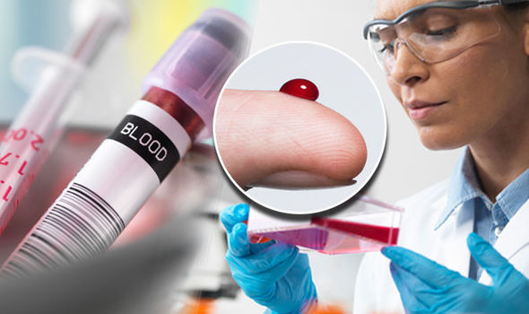
- 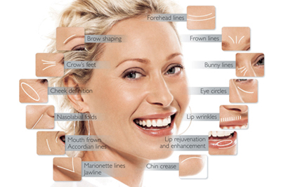
- 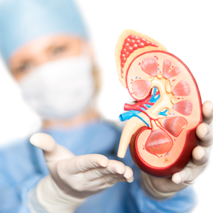
- 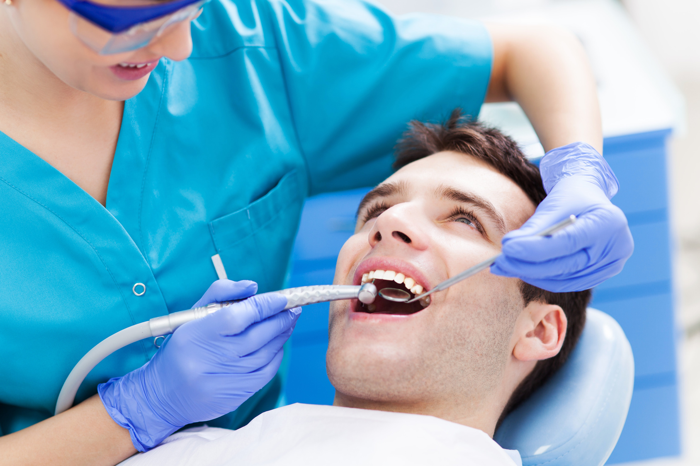
- 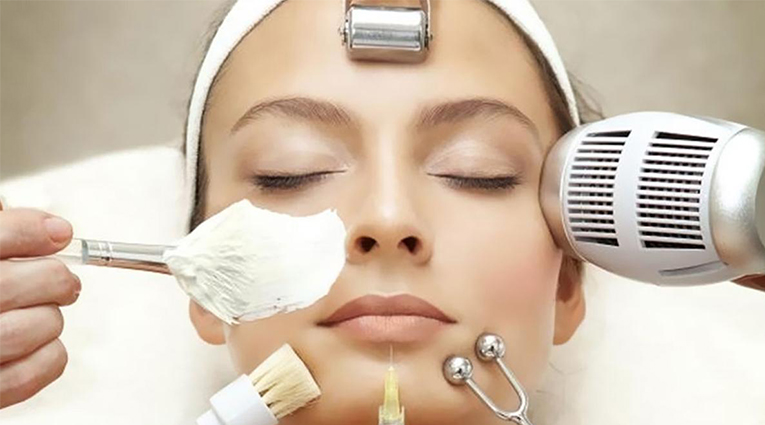
- 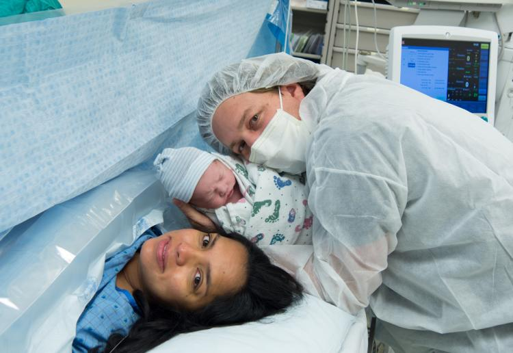
- 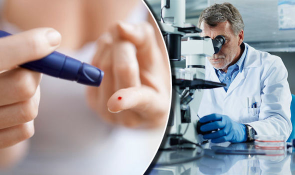
- 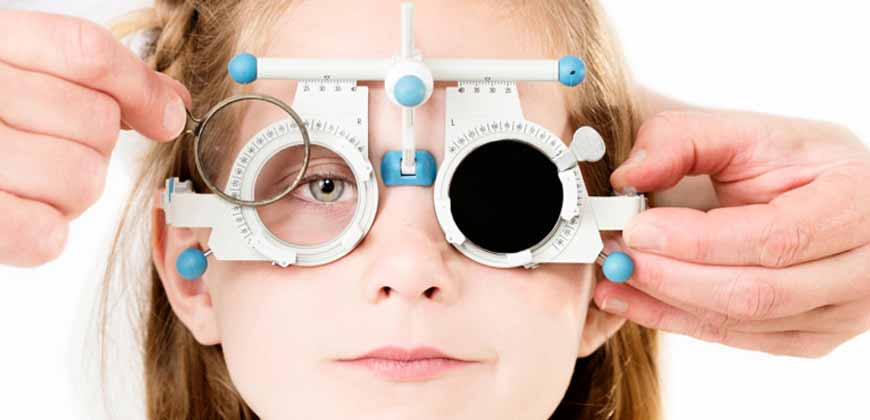
- 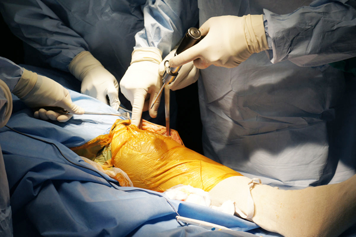
Cosmetic Surgery
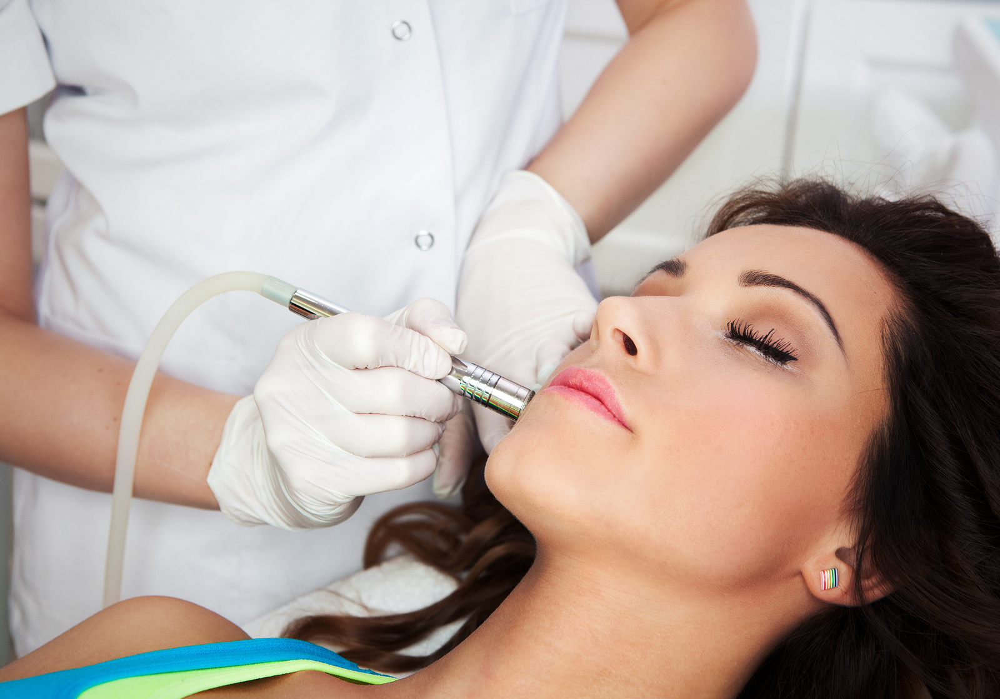Cosmetic surgery is a term used to refer to that medical specialty that involves correction, modification, restoration, and alteration of form and function. The purpose of cosmetic surgery is removing or minimization of cosmetic shortcomings, defects, age-related changes of face, neck and other parts of the body, attaining to aesthetic norm. Cosmetic Surgery in India is considered as an art of enhancing one’s beauty and self-esteem without any post-operative complications under the experience of the artistic talents of the Association of Plastic Surgeons of India at the best Comsteic Surgery Hospitals in India.
Cosmetic surgery in India is safer and more effective now. There has been vast growth in this particular field in the recent years. The improvement of the human figure is now limitless with the advanced medical surgeries, whether it is on the face, body or limbs. Now you can have the perfect figure without spending much from your pocket, if you think any part of your body is not in shape i.e. if you feel something is too big or too small, cosmetic surgery will probably fix it.
Dental Care
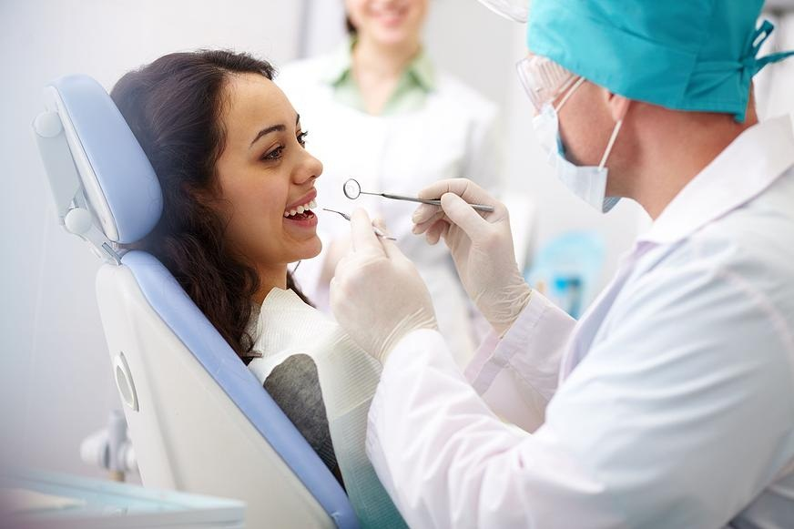
Dental care is the maintenance of healthy teeth and may refer to: Oral hygiene, the practice of keeping the mouth and teeth clean in order to prevent dental disorders. Dentistry, the professional care of teeth, including professional oral hygiene and dental surgery.
Health care problems and treatment packages are very expensive in most of the European and American countries compared to this part of the world. India provide outstanding dental care medical package to meet up your treatment outlay and at the same time guide you to spend the vacation. You can enjoy your holidays and receive services connected to Dentistry such as Dental Implants at a very reasonable price.
The cost of dental treatment is the western countries are approximately 10 times more than that in India. Dental treatment in India is low-priced as compared to the western countries. India, we have clinics with state to the art devices and well trained veteran doctors to match the best of international standards.
Available Dental Care Facilities -
* Cosmetic & Restorative Dentistry. (Tooth coloured fillings & Veneers)
* Crown & Bridge for fixed replacement of broken and missing teeth (Porcelain (Metal & Metal Free), Metallic/ Metal Acrylic)
* Root Canal Treatment.
* Dental Implants.
* Tooth Whitening Procedures.
* Therapeutic Laser Treatment.
Health Checkup
FeesQuee Medical Tourism offers you a complete range of health check-ups not only from its associated hospitals but also from its associated laboratories who provides choice of a best price and good service.
Health checkup in India generally embraces the following :-- Blood Test
- Eye Test
- Platelets
- ESR
- Blood Sugar
- Cholesterol
- Triglycerides
- Urine Analysis
- Liver Function Test
- DLS
- HCT
- MCV
- PCT
- PS
- PDW
- T3,T4,TSM
- X-Ray chest
- ECG
- Ultrasound (abdomen)
- Thyroid Function Test
- Post Prandial
- Fasting
- HB
- Full Haemogram
- Uric Acid
- BUN
- HDL
- LDL
- VLDL
- Renal Profile
- Electrolytes
- Globuin / Albumin
- Alk Phosphatase
Heart Care
Cardiac concern has become a specialty in India with names such as the Fortis Escorts Heart Institute and Research Centre, All India Institute of Medical Science and Apollo Hospital becoming names to consider with. They mingle the latest innovations in medical electronics with unparalleled proficiency in leading cardiologists and cardio-tho-racic surgeons.
They also specialize in offering surgery to high risk patients with the preamble of innovative techniques of plainly insidious and robotic heart surgery package India Principal heart centers like The Escorts Heart Institute have Cardiac Care Units with urbane equipment and investigative facilities like Echocardiography with colored Doppler, Nuclear Scanning and Coronary Angiographies. The Jayadeva Institute of Cardiology in Banglore, the Cardiology Hospital in Kanpur, the Heart Hospital in Calicut and the Sree Sudihindra Medical Mission Hospital in Coaching are some hospitals in India dedicated utterly too cardiac treatment package India.
Heart care package India includes the following :-
- Stress/Resting Thallium
- Cardiac CT-Calcium Scoring
- Coronary MR Angiography
- Multi-Gated Radio nuclear Ventriculography
- Rotational and Directonal Artherectomy
- ECG
- TEE Echo
- Stress Echo
- TMT
- Holter
Diabetes Treatment
Medical science in India has taken rapid as well as big steps forward in past few decades. As a result of that medical facilities in India are at least at par with those of other developed countries, if at all not better than them.
As a result many treatments of various diseases that were not possible in past are now common over there. For instance diabetes treatment in India was unheard of in past times.
But before discussing any further on topic of diabetes treatment in India we first have to gain a holistic as well as comprehensive view and knowledge about diabetes and its treatment.
If one has to define disease of diabetes in a very short as well as succinct manner, then one will have to say simply that diabetes means excess of glucose in blood. This is what common laymen refer to as blood sugar level.
Treatments to diabetes too are many. In most cases doses of insulin are given in order to rectify problem. This treatment is a bit complicated. But that does not mean that doctors in India will not be able to arrange for diabetes treatment in India for people thronging shores of India in hope that they might get well.
Diabetes treatment in India has become so common that people from outside are coming here to get themselves treated when they can get similarly treated at various medical center near their home. One main and possibly most compelling reason for this might be prohibitively high expenses for health care causes in their own country.
Due to existing rates of exchange and also because of several other factors, diabetes treatment in India becomes very cheap as compared to other countries. And one can also be easily assured about quality and treatment as well as post operative care.
After having done that they will have to specify and quantify their problems. After treatment is over there are many opportunities for recuperation. And it is for this reason that medical tourism has simply jumped in India and has made it a global player in this field.
Joint Replacement Surgery
Shoulder/hip replacement and bilateral knee replacement surgery using the most advanced keyhole or endoscopic surgery and arthroscopy is done at several hospitals in India including the Apollo Hospital, Sir Ganga Ram Hospital and Holy Family Hospital in Delhi, Bombay Hospital, Leelavati and Hinduja Hospital in Mumbai and the Madras Institute of Orthopedics and Trauma Sciences. Some hospitals like Apoll0 Max hospital in Delhi have Operation Theatres with Laminar Air Flow System which compares with the best in the USA and the UK. A knee joint replacement costs about 3000 pounds in India whereas in the UK, a similar surgery using the same implants and medical consumables costs around 10,000 pounds.
Risks associated with joints replacement surgery may include :-
- Blood clots
- Infection
- Fracture
- Dislocation
- Change in leg length
- Loosening
Neuro Surgery
There is high quality of microscopic surgery for all possible types of brain surgery such as pituitary tumors, acoustic tumors, skull tumors, intra ventricular tumors, glioma, and so on. There are also several medical institutions that offer neuro surgery in India and specialize in several vascular surgeries such as those for aneurysms of all sizes, arterial bypass, carotid endarterectomy, and other related neuro complications.
The same also applies for various forms of spinal surgeries. Another reason for such an immense popularity of the neuro surgery in India is the great level of pediatric neurosurgery One may contemplate as to why choose India and travel so long a distance for such a complicated treatment as neuro surgery. The answer is rather simple and obvious. The sudden boom in the health industry of the country has resulted in a huge number of medical practitioners who are highly competent. And the cost involved in eth total treatment too is highly competitive. As a result you need less than 50% of what you would need to spend somewhere else. Hence, neuro surgery in India has turned out to be so popular.
Neurosurgery department has neurosurgeons that treat a full range of neurological disorders in the areas of :-
- Cerebrovascular - (AVMs), and Stroke
- Neuro-oncology (Brain Tumors)
- Spinal Neurosurgery
- Genral Neurosurgery
- Trigeminal Neuralgia and Nerve Compression Syndromes
- Peripheral Nerve injury
Eye Care
Eye is one of the most important organs in the body. It is the only source of visual experience. Any kind of Carelessness can be extremely harmful to this vital organ. Therefore whenever you find problems in sighting then you should rush to an eye-specialist without any further delay. But there is one thing that may stop you is the cost of eye treatment. Sad, yet very true. Any ophthalmologist in Europe or America will charge a whopping amount as their bill. Add to that the cost of treatment or surgeries (if required). On the other side of the globe, Eye care India can do the same at remarkably low costs.
What are the eye care treatments available here?
- Lasik Treatment and Lasik Eye Surgery
- Laser Refractive Surgery
- Refractive Eye Correction
- Natural Eye CAre Treatment and the list just goes on.
Baby Delivery
Pregnancy and childbirth are amongst the commonest things in our lives. These are as common and natural as activities like having food or breathing.
Yet, when any of our near and dear ones are expecting, most of the time we get rather tense.
There are valid reasons for such a behavior on our part as well. There are statistics that say that about more than 5 lakh women worldwide die due to complexities and abnormalities that arise out of pregnancy per year.
So, it is quite natural that we opt for extra precautionary measures to secure the condition of pregnancy and delivery of a baby. Quite naturally baby delivery in India too is given a lot of seriousness. There are a few issues that form the commonest causes for maternal death.
These are excessive bleeding during childbirth, serious infections, and so on. There are also several cases of abortion where enough safety measures are not taken. As a result, it leads to maternal mortality. Hence it is always wise to get t know about the various available options of baby delivery in India before actually deciding on the issue.
Though the general health condition in India has not yet reached a mark where we can label it as being 'satisfactory', the last few years have seen a great deal of improvement in regard to baby delivery in India. All the hospitals in India have separate maternity sections.
These sections are manned by doctors and assistants who have specialized in pregnancy conditions and are professionals as far as the act of childbirth is concerned.
Liver Transplant
India is one of the most established healthcare centres in Asia. More and more patients are visiting India for the purpose of medical treatments. A number of vital and major surgeries are carried out in India at remarkably cheaper rates than the west.
It is not just about the cost efficiency, but the healthcare sector in India also offers high quality medical treatment, facilities and services.
The healthcare industry in India is gaining increasing importance due to the high success rate and the growing credibility. Liver transplant in India is one major surgery that has gained immense popularity over the past few years.
Liver transplantation is also referred to as hepatic transplantation. This major surgery involves the replacement of a diseased liver with a healthy liver allograft. The technique that is most commonly used by surgeons to perform liver transplant in India is orthotopic transplantation.
For adults, 73 percent were still alive after five years and 50 percent were still alive after 20 years. “Without a transplant, the five-year survival rates are below 5 percent, depending on the severity of the liver disease,” Dr. Petrowsky said.
Kidney Transplant
Before starting a very specific discussion on kidney transplantation in India it is essential for all to know what exactly is meant by a kidney transplant procedure. There are certain organs which are present inside our body in pairs such as our eyes lungs and ears.
Similarly in case of kidneys too, we are gifted with a pair. Function of kidneys is to mainly purify a human's blood and help in urine formation.
If one kidney fails then other one can carry on as usual. But problems arise if both of them fail. In that case a surgical process is needed in which a new kidney from a willing donor is used to replace defective kidney.
Main thing that is to be considered is that new kidney should be compatible with patient and this determined by means of blood tests. Now this brings us to discussion of kidney transplantation in India.
Kidney transplantation in India has now become a very common occurrence. This would surprise many who remember India from its olden days.
In older times India was seen as a hell house of diseases which is in stark contrast to image that it carries now which is of a haven of treatment.
But there are certain rules and regulations that govern any treatment or procedure related to kidney transplantation in India. To begin with patient or his or her family will themselves have to find a donor who is willing to donate his or her kidney for operation on patient. Hospitals in India do not take responsibility of locating donors. Next important matter that has to be kept in mind is that it is very much essential to get permission from Government of India before carrying out any kidney transplantation in India over there. And these are the rules, not hurdles in India which has become favorite spot for most medical tourists.
Skin Treatment
Do you want to remain beautiful? DO you wish to stay young forever? Botox may not be enough. The best way to take care of this is follow some basic steps of skin care. If that fails it is time to get some skin treatment.
Why Skin treatment India?
India has had a very rich history. One of the biggest exponents of this is probably the ayurvedic treatment. Ayurvedic has been a storehouse of natural skin treatments. With the help of this treatment procedure, you can get hold of all skin ailments.
However, as time moved on and new and better ways of treating skin problems, the popularity of these treatments slowly decreased.
However, this does not mean that the popularity of Skin treatment India has decreased in any way In fact, Skin treatment India has become even more popular than ever before. The reasons are many and may be summed up as the following :-
- The efficiency of the dermatologists
- The low cost of treatment
Fat Grafts Plastic Surgery
Fat grafting is a form of plastic surgery in which fat is taken out from some part of the body to be inserted through surgical methods to correct any disabilities or abnormalities or just for the purposes of enhancing beauty.
In fat grafting, the fat is taken from where the patient does not want it and inserted where he or she does want it e.g. the lips, the cheekbones, the chin and the buttocks.
Fat injections were started in 1893 by German doctor, Franz Neuber. He used a small piece of the upper arm fat and grafted it on to the face of a patient whose cheeks were sunken due to a tubercular inflammation of the bone.
Fat grafting is commonly used to do away with the effects of aging on the skin, the muscles and flesh of our body. Fat grafts plastic surgery in India is mainly localized in the towns and cities.
It has not yet reached the common rural masses. As it is, very few people opt for a plastic surgery. This is where emergency requirements come into the picture. People affected by burns frequently go for fat grafts plastic surgery in India.
A liposuction is performed from various body parts such as thighs, stomach and buttocks and the fat is injected into selected areas which need to be filled. It is widely used for cosmetic and aesthetic purposes.
In towns and cities women go for fat grafts plastic surgery in India to enhance their beauty. Fat grafting can help to do away with the defects and to get back younger appearance. Fat grafting fills up expression folds and sunken cheeks and scars and lips.
Fat grafts plastic surgery in India has not affected the villages as much as it has the towns and cities. The life in cities and towns is also much different than the villages.
ENT Care India
There are times when it so happens that small things in life assume a volume that ceases to remain that small any more. It applies for issues related to health and fitness as well.
Though they are all very important parts of the body, we tend to give less importance to the problems related to ear, nose, and throat, i.e. the ENT problems. But the consideration changes when we have to face problems related to ENT and which are rather serious in proportion.
Consider a case where a couple has a child who is totally deaf. Often such cases are taken to be incurable and the child left for a lifetime of handicap and humiliation.
In case you are really having some serious ENT problem, it is time you traveled over to India and opted for the ENT care in India.
Why ENT care in India?
The question may arise in your mind as to why travel all the way over to India in order to avail the ENT care in India. Well, there are several reasons why such a decision on your part can prove to be wise in more than one ways. The recent surge in the health industry in India has seen in a drastic change in the entire medical scenario of the country. Today there are numerous medical units that have specialized in ENT care in India.
There are several sorts of ailments and disabilities that fall under the discipline of ENT. Once you come over to India, you will get satisfactory service for each of these. Some of the ENT problems and their treatment in which the Indian medical professionals' expertise are:
- Sinus endoscopy
- Pediatric otorinolaryngology
- Cochlear implant
Copyright 2017 FeesQuee Medical Tourism. All rights reserved
Powered By Oriental Institute of Technology